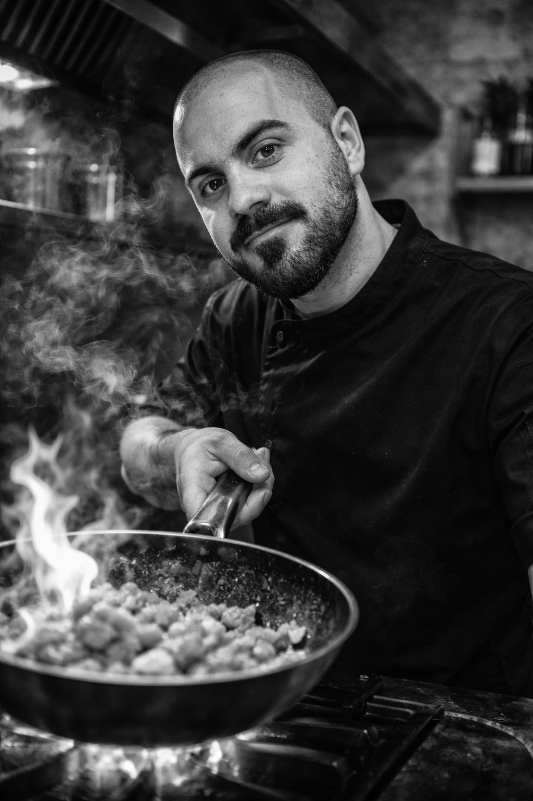
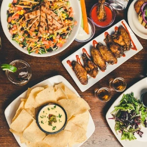
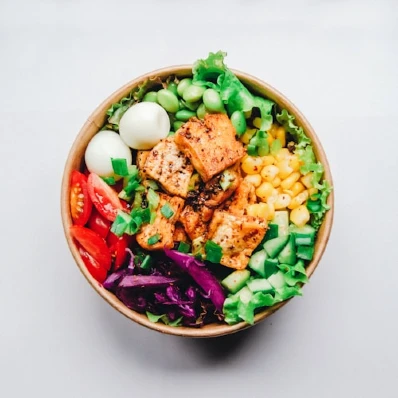
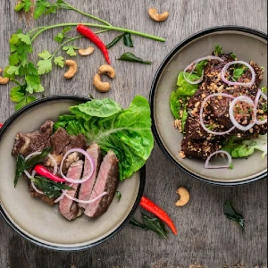
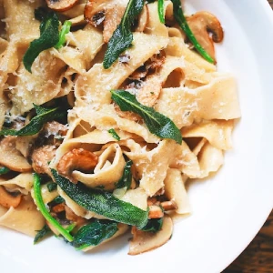
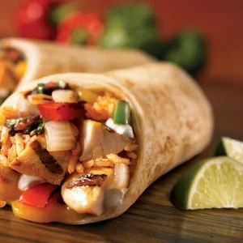

Bistrô Bar Sanches & Pinto


Carousel
-

-

-
-

-

-


Reviews
Danilson Sanches nasceu na ilha de Santiago, Cabo Verde, onde aprendeu desde cedo a valorizar sabores intensos e ingredientes frescos. Cresceu entre mercados coloridos e cozinhas cheias de aromas exóticos, e foi aí que surgiu a sua paixão por sabores ricos e contrastes ousados. Em jovem, saiu da sua terra natal com o sonho de explorar outras culturas culinárias e aprofundar os seus conhecimentos gastronómicos. Depois de muitas viagens, aprendizagens e experiências, descobriu em Portugal um lugar para unir o espírito vibrante de Cabo Verde com técnicas avançadas da cozinha europeia.
Abel Pinto, natural de Sesimbra, trouxe consigo a tradição marítima que viveu desde pequeno. Filho de pescadores, passou anos observando como o peixe e os frutos do mar eram preparados com respeito e cuidado. Desenvolveu um estilo próprio que valoriza a pureza dos ingredientes e a apresentação refinada, sempre com toque criativo. Quando Abel e Danilson se conheceram, encontraram uma ligação imediata — tanto no amor pela gastronomia quanto na vontade de transformar ingredientes simples em experiências memoráveis.
⭐ ⭐ ⭐ ⭐ ⭐ “Uma experiência absolutamente fantástica. A combinação de sabores é incrivelmente equilibrada, e o serviço foi excepcional. Voltarei com certeza!” — Mariana Lopes, 15 de Outubro de 2025
⭐ ⭐ ⭐ ⭐ ⭐ “Melhor refeição da minha vida! Cada prato parecia contar uma história, e o ambiente do Bistro Bar fez-nos sentir em casa. Recomendo!” — Tiago Silva, 3 de Setembro de 2025
⭐ ⭐ ⭐ ⭐ ⭐ “A atenção aos detalhes é impressionante. Desde a entrada até a sobremesa, tudo foi perfeito. Absolutamente cinco estrelas!” — Ana Costa, 27 de Agosto de 2025
⭐ ⭐ ⭐ ⭐ ⭐ “O atendimento foi impecável e os pratos cheios de personalidade. Não há dúvida de que este é um dos melhores restaurantes da região!” — Rúben Fernandes, 12 de Julho de 2025
⭐ ⭐ ⭐ ⭐ ⭐ “Inesquecível! Os sabores são ousados e deliciosos, combinando tradição e criatividade como poucas vezes vi. Simplesmente divino!” — Isabela Martins, 29 de Junho de 2025
Hoje, Bistro Bar Sanches & Pinto é o reflexo dessa fusão de mundos: a energia tropical de Danilson com a delicadeza marítima de Abel. Cada prato conta uma história de raízes, viagens e paixão — não apenas pela comida, mas pelas pessoas que partilham cada refeição.
Nossa História
A paixão pela gastronomia não nasce da facilidade. Ela se forja nas dificuldades, nas tentativas e nos erros, e é assim que o Bistrô Bar Sanches & Pinto ganhou vida.
Fundado por Danilson Sanches, natural de Cabo Verde, e Abel Pinto, de Sesimbra, o restaurante nasceu do sonho de unir mundos distintos: a energia vibrante da culinária africana com a delicadeza marítima portuguesa. Cada prato, cada tempero, carrega a história de vida de quem o prepara e de todos que participaram da construção deste espaço.
Desde os primeiros desafios — adaptar um espaço antigo, encontrar os melhores ingredientes e criar um ambiente acolhedor —, até a consolidação da identidade do restaurante, cada passo exigiu coragem, criatividade e perseverança. Houve noites sem dormir, decisões difíceis, ajustes de última hora e momentos que pareciam impossíveis, mas a paixão sempre prevaleceu.
Hoje, o Bistrô Bar Sanches & Pinto não é apenas um restaurante. É um reflexo de trajetórias, culturas e sonhos, onde cada prato conta uma história, cada detalhe da decoração tem um propósito, e cada visita se transforma numa experiência memorável. É a fusão de talentos, experiências e dedicação que transforma a refeição em algo além do sabor: em memória, emoção e arte.
Bem-vindos ao nosso espaço. Aqui, cada momento é pensado, cada ingrediente é escolhido com cuidado e cada cliente se torna parte da nossa história.

Galeria